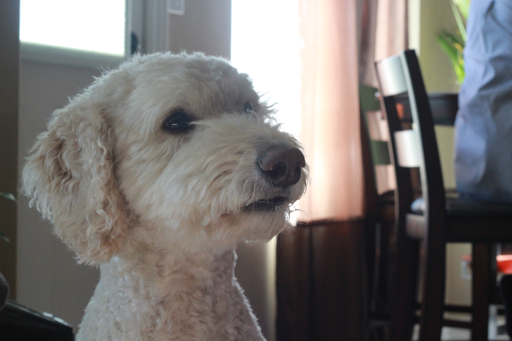
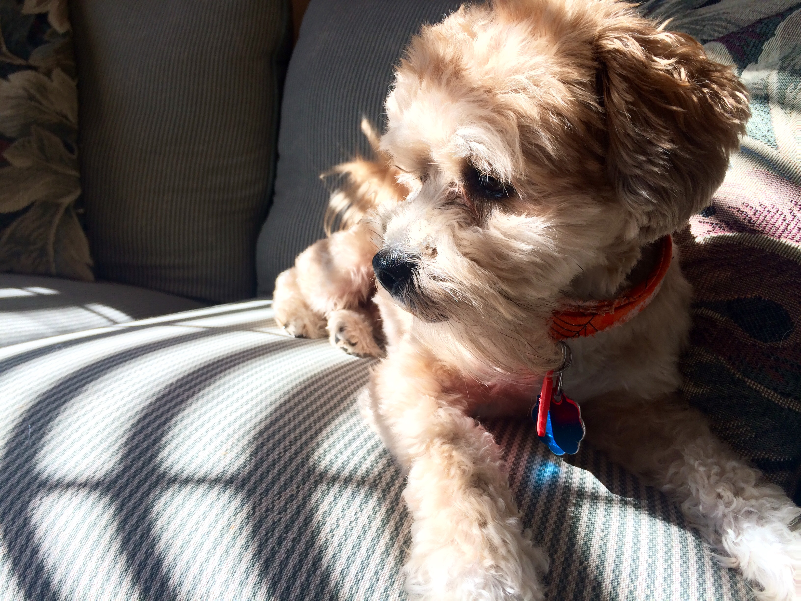
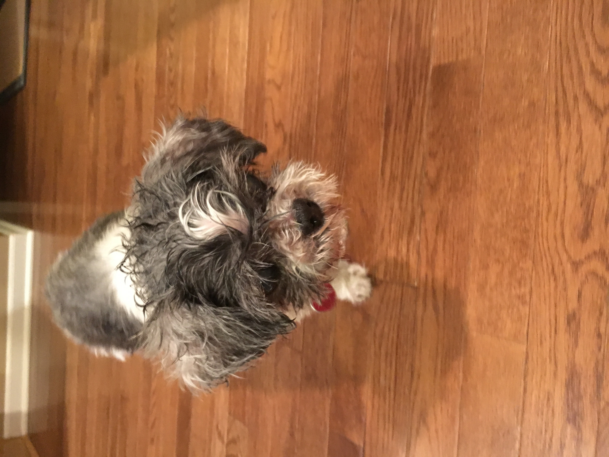
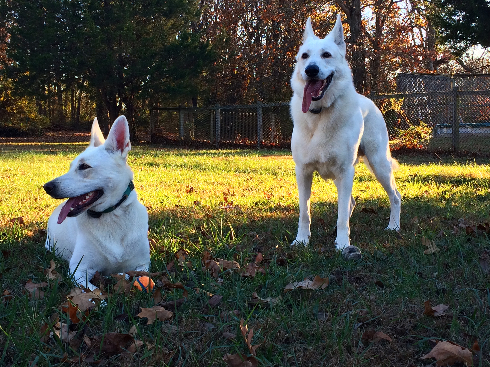
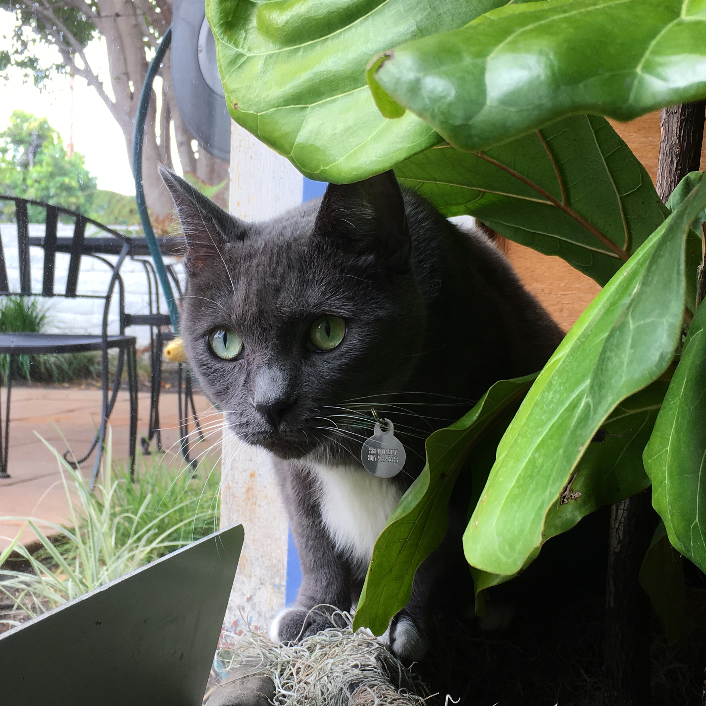

Kalani

Kalani is honestly the best dog in the entire world. He was adopted about five years ago,
and having him around has made the last five years so much fluffier. Kalani is a loving
Golden Doodle who enjoys mangoes, carrots, and pumpkin. (I think I'm seeing a color trend here...)
Eli

Eli came into my life at the close of my senior year of high school. He was the second dog that
I've known from puppy and beyond. Hobbies include tug of war, running around the yard, and long naps
on the couch.
Shaggy

Shaggy was with me from elementary school through graduating college. He was always a grumpy old man,
even from a young age. After having Eli around for a while, I think he really started to enjoy the company.
Even to the point that he refused to sleep alone any more. It was a rough few weeks after he passed, but
that is the tragedy of having pets.
Shiva & Kali

Throughout college, I was devastated not being able to have a dog around. My solution? Pet sitting!
I had two professors that loved dogs as much as I did, and would often need someone to watch them.
It was easily one of the best jobs I've ever had. The first two dogs that I got to watch regularly were
Shiva and Kali. They were brother and sister, and two beautiful White German Shepherds. So much energy,
love, and all the fur you could ever hope for. Miss them.
Kitty Gris

Okay, I know this is technically about dogs, but I couldn't leave out Gris. Just after graduation,
I moved out to California, where I got a job at a lovely little winery on the coast. Many of them have cats
around to keep out mice and other pests, and Gris was the resident mouser where I worked. We constantly played,
ate treats, and had an all-around good time. Sadly I have since moved on, but always say hello when I go back to visit.